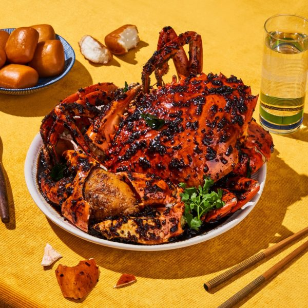
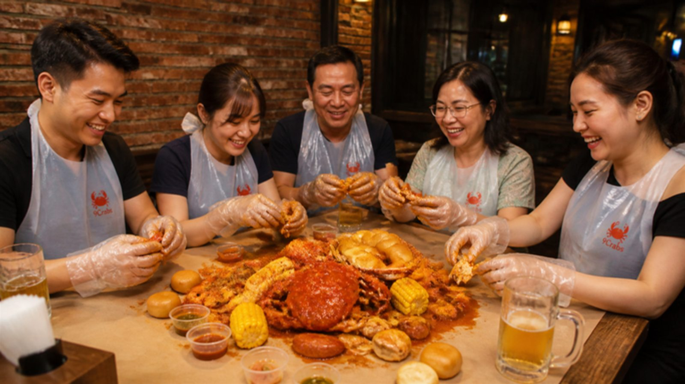
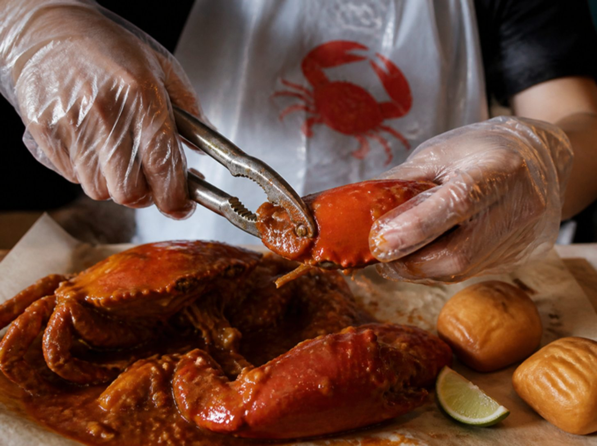
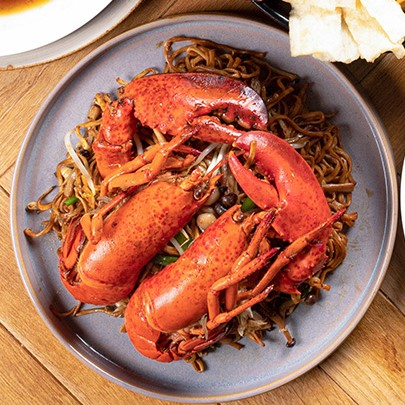

Giá giảm sâu
Giá giảm sâuCombo 2 cua lớn
1.280.000đ 1.390.000đ
2 con ~700g, chọn 2 vị. Tặng 6 bánh bao chiên.
Chúng tôi yêu cua – và biết bạn cũng vậy. 9Crabs chọn tay từng con cua gạch son đánh bắt tự nhiên, chế biến ngay khi bạn đặt và giao nóng hổi trong 1 giờ.

Chúng tôi đã đi khắp Năm Căn, Ngọc Hiển để tìm những ghe cua ngon nhất – và học cách nấu từ chính người dân bản địa.
Đầu bếp 9Crabs có hơn 10 năm kinh nghiệm tại khách sạn 5 sao, kết hợp công thức miền Tây với kỹ thuật bếp Á hiện đại.
Chán cảnh phải chạy xa mới có cua tươi, chúng tôi mang cua Cà Mau nấu tươi đến tận bàn ăn của bạn trong 1 giờ.


Ăn bốc đúng điệuĂn cua là phải bốc tay. Mỗi đơn 9Crabs đều kèm trọn bộ đồ nghề để bạn ăn thoải mái mà áo vẫn sạch – đổ cả túi hải sản ra bàn cũng không ngại.
Chống dơ áo, một người một cái, có cả cỡ trẻ em.
Bốc, bẻ, chấm sốt thoải mái; không cần rửa tay giữa chừng.
Lót giấy, đổ hải sản ra bàn, ăn xong cuộn lại là sạch.
Cua Cà Mau, cua lột, tôm sú, tôm hùm, nghêu, crawfish theo mùa.
Rang me, sốt ớt Singapore, trứng muối, tiêu đen, bơ tỏi, Cajun, Tom Yum.
Không cay · Nhẹ · Vừa · Cay xé – bếp nêm đúng ý bạn.
Chỉ dùng cua biển Cà Mau loại AAA do đội phân loại giàu kinh nghiệm chọn tay – không "vỏ rỗng".
Cua về sáng, nấu chiều. Chúng tôi không cấp đông, không hâm lại; cua được làm sạch và chế biến ngay khi bạn đặt.
Sáu loại sốt đặc trưng từ rang me miền Tây đến trứng muối, tiêu đen Phú Quốc – đậm đà, khó quên.
Giá giảm sâu2 con ~700g, chọn 2 vị. Tặng 6 bánh bao chiên.
2 cua lớn + hải sản thố + gà chiên mắm + 9 bánh bao.

Mua 1 tặng 1Hai con tôm hùm tươi, nướng phô mai hoặc hấp bơ tỏi.
Giá theo thị trường, đã gồm công chế biến. Mỗi combo cua đều tặng kèm bánh bao chiên và kìm bẻ cua.
Cua óp, thiếu gạch, sai size – đổi ngay
Cua Cà Mau đánh bắt, không nuôi
Chế biến khi bạn đặt, không hâm lại
Hoàn phí giao nếu trễ
Top cua ngon Sài Gòn 2024, 2025
★★★★★Mâm tiệc rất đáng tiền, món nào cũng ngon. May mà gọi thêm con cua, thịt chắc nịch, gạch béo ngậy!
★★★★★Đặt lúc 6 giờ, 6 giờ 45 đã có cua nóng hổi trên bàn. Cua rang me chuẩn vị miền Tây, cả nhà khen nức nở.
★★★★★Cua sốt trứng muối là chân ái. Nhân viên tư vấn nhiệt tình, hộp đựng sạch sẽ, có cả kìm bẻ cua kèm theo.
Có, đó là thế mạnh của chúng tôi. Cua được làm sạch, nấu tươi và giao nóng trong 1 giờ toàn TP.HCM, từ 11:00 đến 22:00 mỗi ngày.
Miễn phí cho đơn từ 1.500.000đ. Đơn dưới mức này tính 49.000đ. Bạn có thể chọn khung giờ hoặc giao sớm nhất.
Chúng tôi chỉ dùng cua Cà Mau đánh bắt tự nhiên vùng Năm Căn – Ngọc Hiển, to và chắc thịt hơn hẳn cua nuôi. Đầu bếp có hơn 10 năm kinh nghiệm tại khách sạn 5 sao.
Nhắn Zalo cho chúng tôi kèm mã đơn và món muốn thêm, đội chăm sóc khách hàng sẽ ghép đơn mà không tính thêm phí giao.
Trong trường hợp hiếm hoi đó, hãy báo ngay – 9Crabs đổi 1-1 hoặc hoàn tiền vào ví tích điểm, không hỏi nhiều.
9Crabs mang cua tươi, món kèm và nhân viên bày biện đến tận nơi, để bạn chỉ việc tận hưởng bữa tiệc cùng những người thân yêu.
Đăng ký đặt tiệc Thẻ thành viên